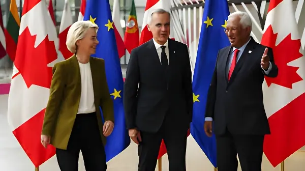

Les 4 et 5 mai 2026, le premier ministre Mark Carney a participé au 8e sommet de la Communauté politique européenne à Erevan, en Arménie — une première historique pour un dirigeant non européen. Dans un contexte de fractures transatlantiques et de rapprochement accéléré entre Ottawa et Bruxelles, cette présence marque une inflexion majeure dans la politique étrangère canadienne.
La Communauté politique européenne est un forum informel de coopération intergouvernementale, lancé à l'initiative d'Emmanuel Macron en octobre 2022, dans les semaines suivant l'invasion russe de l'Ukraine. Réunissant deux fois par an la quasi-totalité des pays du continent — membres de l'UE et non-membres, à l'exclusion de la Russie et du Bélarus —, la CPE n'aboutit pas à des conclusions écrites contraignantes, mais constitue un espace de dialogue politique et de construction de coalitions.
À Erevan, pour la première fois de son histoire, la CPE a accueilli un dirigeant issu d'un pays non européen : le premier ministre canadien Mark Carney. Sa présence, saluée chaleureusement par ses homologues, illustre le rapprochement spectaculaire engagé entre le Canada et l'Europe depuis le début de la présidence Trump. Carney lui-même a souligné l'enjeu symbolique de sa venue, affirmant que le sommet intervenait à un moment crucial pour les valeurs européennes et l'ordre international.
Le choix d'Erevan comme lieu d'accueil du sommet est lui-même chargé de signification. Depuis la « révolution de velours » de 2018, l'Arménie de Nikol Pachinian engage un pivot progressif vers l'Union européenne, s'émancipant de la tutelle russe. Antonio Costa, président du Conseil européen, a résumé l'ambition du sommet en affirmant qu'il « met l'Arménie au cœur de l'Europe, ce qui est exactement sa place ».
Pour le Canada, la relation avec l'Arménie elle-même n'est pas sans histoire. Ottawa avait soutenu une mission de sécurité de l'UE après les tensions au Haut-Karabakh, avait suspendu ses exportations militaires vers la Turquie par crainte de leur détournement vers l'Azerbaïdjan, et avait ouvert une ambassade à Erevan en 2023. Mais c'est désormais l'agenda commercial et sécuritaire qui prime : le communiqué du bureau de Carney ne fait aucune mention de la situation géopolitique régionale.
Trump impose des tarifs douaniers massifs sur les importations canadiennes. Carney amorce un rapprochement stratégique avec l'Europe en réponse.
Élection fédérale canadienne. Les libéraux de Carney l'emportent avec 169 sièges. Le mandat diplomatique se consolide.
Carney se rend à Varsovie et signe un partenariat stratégique avec la Pologne (défense, énergie, cybersécurité). Le Canada sera pays-hôte de l'MSPO 2026.
Le Canada devient le premier pays non européen à rejoindre l'instrument SAFE de l'UE (Agir pour la sécurité en Europe), ouvrant son industrie de défense aux marchés européens.
Carney arrive à Erevan. Il rencontre le premier ministre arménien Nikol Pachinian à la Maison du gouvernement avant l'ouverture officielle du sommet.
8e sommet de la CPE et premier sommet UE–Arménie. Carney prend la parole en séance plénière et multiplie les rencontres bilatérales avec 9 dirigeants ou institutions.
La présence de Carney à Erevan était autant diplomatique que symbolique. En l'absence remarquée du chancelier allemand Friedrich Merz, pris dans une controverse géopolitique liée au conflit irano-américain, c'est le premier ministre canadien qui a, selon Euronews, « comblé le vide ». Ses homologues l'ont accueilli favorablement, multipliant les échanges en tête-à-tête avec l'ancien gouverneur de la Banque d'Angleterre.
Dans son intervention, Carney a tracé une ligne nette entre la vision canadienne d'un ordre international fondé sur des règles — « la liberté, l'État de droit, la démocratie et le pluralisme » — et le modèle transactionnel incarné par Donald Trump. Il a repris une ligne déjà développée à Davos plus tôt dans l'année, où il appelait à une coalition de puissances moyennes pour contrebalancer les grandes puissances hégémoniques. Il a également accepté l'invitation de la présidente du Parlement européen, Roberta Metsola, de prononcer un discours devant les eurodéputés.
Au-delà du symbole, le voyage de Carney à Erevan avait des objectifs concrets. Le premier ministre a présenté le Canada comme une « destination de choix » pour les capitaux européens, en ciblant quatre secteurs prioritaires : les minéraux critiques, l'énergie, la défense et les technologies avancées. L'UE reste le deuxième partenaire commercial du Canada dans le monde, avec des échanges de 178,6 milliards de dollars en 2025, et le deuxième investisseur étranger au Canada après les États-Unis.
Sur le terrain de la défense, l'adhésion canadienne à l'instrument SAFE en février 2026 est présentée par Ottawa comme un levier majeur : elle ouvre aux industriels canadiens un accès direct aux marchés de défense européens, au moment où les Européens cherchent à réduire leur dépendance à l'égard des États-Unis pour leur approvisionnement militaire. Lors de sa bilatérale avec Donald Tusk, Carney a évoqué le partenariat polono-canadien en matière de défense et l'approche commune sur l'Ukraine.
| Partenaire rencontré | Sujet principal |
|---|---|
| Nikol Pachinian (Arménie) | Relations bilatérales, invitation au sommet |
| Emmanuel Macron (France) | Défense européenne, Ukraine |
| Volodymyr Zelensky (Ukraine) | Soutien militaire et reconstruction |
| Donald Tusk (Pologne) | Partenariat stratégique, défense, OTAN |
| Pedro Sánchez (Espagne) | Commerce et investissements |
| Giorgia Meloni (Italie) | Énergie, minéraux critiques |
| Ursula von der Leyen / Antonio Costa (UE) | Instrument SAFE, AECG, partenariat global |
« Nous ne pensons pas être condamnés à nous soumettre à un monde plus transactionnel, insulaire et brutal. »
— Mark Carney, séance plénière du sommet de la CPE, Erevan, 4 mai 2026« Je suis convaincu que l'ordre international sera reconstruit, mais qu'il le sera à partir de l'Europe. »
— Mark Carney, sommet de la CPE, Erevan, 4 mai 2026La présence de Mark Carney à Erevan incarne un tournant dans l'histoire diplomatique canadienne. Longtemps absorbé par sa relation exclusive avec les États-Unis, le Canada assume désormais un rôle de puissance médiatrice dans un ordre international en recomposition. L'adhésion à la CPE, même informelle, traduit la volonté d'Ottawa de s'ancrer dans un réseau de démocraties qui partagent ses valeurs face aux pressions des grandes puissances hégémoniques. Pour Carney, économiste de formation, le pari est double : faire du Canada un partenaire indispensable à la sécurité et à la prospérité européennes, tout en montrant à ses propres électeurs qu'une politique étrangère souveraine est possible — et rentable.
On 4–5 May 2026, Prime Minister Mark Carney attended the 8th European Political Community summit in Yerevan, Armenia — a historic first for a non-European leader. Against a backdrop of transatlantic fractures and accelerating ties between Ottawa and Brussels, his presence marks a decisive shift in Canadian foreign policy.
The European Political Community is an informal intergovernmental forum launched on Emmanuel Macron's initiative in October 2022, in the early weeks of Russia's invasion of Ukraine. Gathering nearly all European countries twice a year — EU members and non-members alike, excluding Russia and Belarus — the EPC produces no binding written conclusions, but serves as a space for political dialogue and coalition-building.
At Yerevan, for the first time in its history, the EPC welcomed a leader from a non-European country: Canadian Prime Minister Mark Carney. His presence, warmly welcomed by his counterparts, reflects the spectacular rapprochement between Canada and Europe since the start of the Trump presidency. Carney himself underscored the symbolic stakes, stating that the summit came at a crucial moment for European values and the international order.
The choice of Yerevan as the summit's host city is itself significant. Since the 2018 "Velvet Revolution", Nikol Pashinyan's Armenia has been gradually pivoting toward the European Union, loosening its historic ties with Russia. European Council President Antonio Costa set the tone at the opening ceremony, declaring that the summit "places Armenia at the heart of Europe, which is exactly where it belongs".
For Canada, the relationship with Armenia itself has its own history. Ottawa had supported an EU security mission following the Nagorno-Karabakh tensions, had suspended military exports to Turkey over fears of diversion to Azerbaijan, and opened an embassy in Yerevan in 2023. But it is now trade and security that dominate the agenda: Carney's office issued no statement on the regional geopolitical situation.
Trump imposes sweeping tariffs on Canadian imports. Carney begins a strategic pivot toward Europe in response.
Canadian federal election. Carney's Liberals win 169 seats, securing a mandate for an assertive foreign policy.
Carney travels to Warsaw and signs a strategic partnership with Poland on defence, energy and cybersecurity. Canada designated lead country at MSPO 2026.
Canada becomes the first non-EU country to join the SAFE instrument (Security Action for Europe), opening its defence industry to European procurement markets worth billions.
Carney arrives in Yerevan. He meets Armenian PM Nikol Pashinyan at the Government House ahead of the summit's formal opening.
8th EPC summit and first-ever EU–Armenia summit. Carney addresses the plenary session and holds nine bilateral meetings with heads of state and EU institutions.
Carney's presence in Yerevan was as much symbolic as diplomatic. In the notable absence of German Chancellor Friedrich Merz — caught up in a geopolitical controversy over the US-Iran conflict — it was the Canadian Prime Minister who, according to Euronews, "filled the void". His counterparts appeared genuinely pleased by his presence, lining up for one-on-one talks with the former central banker.
In his address, Carney drew a clear line between the Canadian vision of a rules-based international order — built on "freedom, the rule of law, democracy and pluralism" — and the transactional model embodied by Donald Trump. He revisited a theme he had first raised at Davos earlier in the year, calling for a coalition of middle powers to counterbalance the major hegemonies. He also accepted an invitation from European Parliament President Roberta Metsola to address MEPs.
Beyond symbolism, Carney's trip to Yerevan had concrete objectives. The Prime Minister positioned Canada as a "destination of choice" for European capital, targeting four priority sectors: critical minerals, energy, defence, and advanced technologies. The EU remains Canada's second-largest trading partner in the world, with bilateral trade reaching $178.6 billion in 2025, and is the second-largest source of foreign direct investment in Canada after the United States.
On defence, Canada's February 2026 accession to the SAFE instrument is presented by Ottawa as a key lever: it opens Canadian defence manufacturers to European procurement markets at a moment when Europeans are actively seeking to reduce their dependence on the United States for military supply chains. In his meeting with Donald Tusk, Carney highlighted the Canada-Poland defence partnership and their shared approach on Ukraine.
| Partner met | Key topic |
|---|---|
| Nikol Pashinyan (Armenia) | Bilateral relations, summit invitation |
| Emmanuel Macron (France) | European defence, Ukraine |
| Volodymyr Zelensky (Ukraine) | Military support and reconstruction |
| Donald Tusk (Poland) | Strategic partnership, defence, NATO |
| Pedro Sánchez (Spain) | Trade and investment |
| Giorgia Meloni (Italy) | Energy, critical minerals |
| Von der Leyen / Costa (EU) | SAFE instrument, CETA, global partnership |
"We do not believe we are destined to submit to a world that is more transactional, more insular and more brutal."
— Mark Carney, EPC plenary session, Yerevan, 4 May 2026"I am convinced that the international order will be rebuilt, and it will be rebuilt from Europe."
— Mark Carney, EPC summit, Yerevan, 4 May 2026Mark Carney's presence in Yerevan embodies a turning point in Canadian diplomatic history. Long absorbed by its exclusive relationship with the United States, Canada is now asserting itself as a mediating power in a reshaping international order. Joining the EPC — even in an informal capacity — signals Ottawa's intent to anchor itself within a network of like-minded democracies capable of upholding shared values against the pressure of hegemonic powers. For Carney the economist, the wager is twofold: make Canada an indispensable partner to European security and prosperity, while proving to his own voters that a sovereign foreign policy is both possible — and profitable.